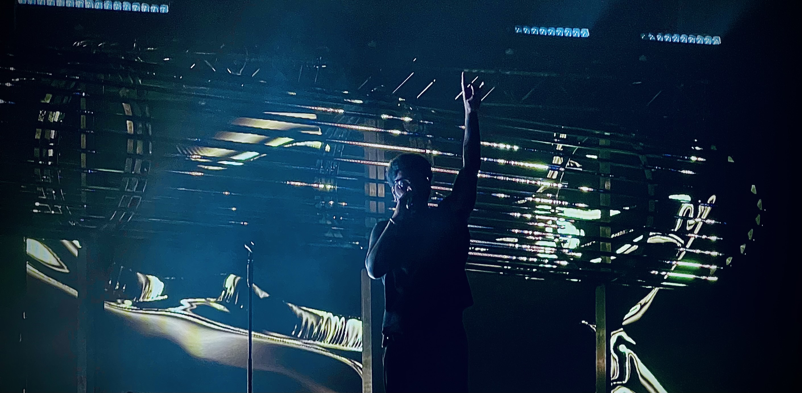

Welkom bij That’s a (w)RAP!
- Wat bespreken we? In That’s a (w)RAP! brengen we je mee op een reis door de rijke geschiedenis van rap. We belichten de grootste invloeden van de jaren ’90—van de legendarische East Coast-West Coast rivaliteit en de impact van iconische artiesten zoals Tupac, Biggie en Nas, tot de ondergrondse opkomst van alternatieve rap. We gaan in op hoe rap zich verder ontwikkelde in de jaren 2000 met artiesten als Eminem, Jay-Z en Missy Elliott, die het genre naar nieuwe hoogtes tilden en rap mainstream maakten. Daarnaast besteden we aandacht aan de groei van vrouwelijke rappers, die steeds meer hun stempel drukken op het genre. Van pioniers als Lauryn Hill en Queen Latifah tot hedendaagse powerhouses als Nicki Minaj, Cardi B en Megan Thee Stallion. We onderzoeken hoe vrouwen de grenzen van rap hebben verlegd en hun stem sterker hebben gemaakt in een van oudsher door mannen gedomineerd genre.
- Onze huidige focus We bespreken niet alleen de geschiedenis van rap, maar kijken ook naar hoe het genre zich de laatste jaren heeft ontwikkeld. We analyseren de doorbraak van trapmuziek, de invloed van mumble rap, en de creatieve fusie van rap met andere genres zoals pop, R&B en zelfs rock. Denk aan artiesten zoals Kendrick Lamar, J. Cole, Drake en nieuwe generaties die het genre opnieuw definiëren. Elk tijdperk brengt nieuwe geluiden, stijlen en boodschappen met zich mee—en wij zorgen ervoor dat jij op de hoogte blijft!
- Luister en discussieer mee! Iedere dinsdag en donderdag om 16:00 staat er een nieuwe aflevering voor je klaar. We nodigen je uit om met ons mee te luisteren, te discussiëren en jouw perspectief te delen. Heb je zelf een onderwerp dat je wilt dat we behandelen? Of een artiest waar je meer over wilt weten? Laat het ons weten via ons contactformulier of stuur ons een berichtje via social media!
Mis geen enkele aflevering en zet het in je agenda: elke dinsdag en donderdag om 16:00!